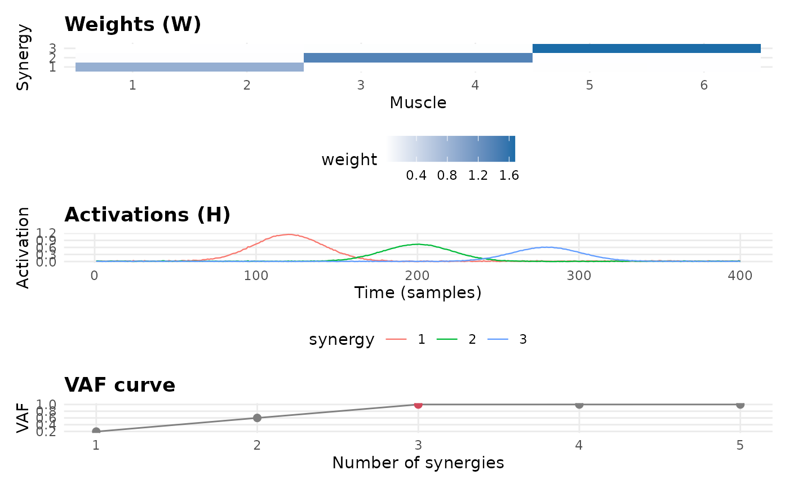

Renders a three-panel figure for a muscle-synergy decomposition: the synergy weight matrix W (heatmap), the activation time courses H, and the VAF curve.
Arguments
- x
A
muscleSynergy()result, or amuscleSynergyOrder()result (whose VAF curve and selected order are used).
References
Ting, L.H. & Chvatal, S.A. (2010). "Decomposing muscle activity in motor tasks: methods and interpretation." In Motor Control (Oxford).
Examples
set.seed(1)
tt <- seq_len(400)
H <- sapply(c(120, 200, 280), function(c0) exp(-((tt - c0) / 30)^2))
W <- rbind(c(1, 1, 0, 0, 0, 0), c(0, 0, 1, 1, 0, 0), c(0, 0, 0, 0, 1, 1))
data <- H %*% W + matrix(abs(rnorm(400 * 6, sd = 0.02)), 400, 6)
pe <- PhysioExperiment(assays = list(env = data), samplingRate = 1000)
ord <- muscleSynergyOrder(pe, max_synergies = 5, seed = 1)
plotSynergy(ord)
